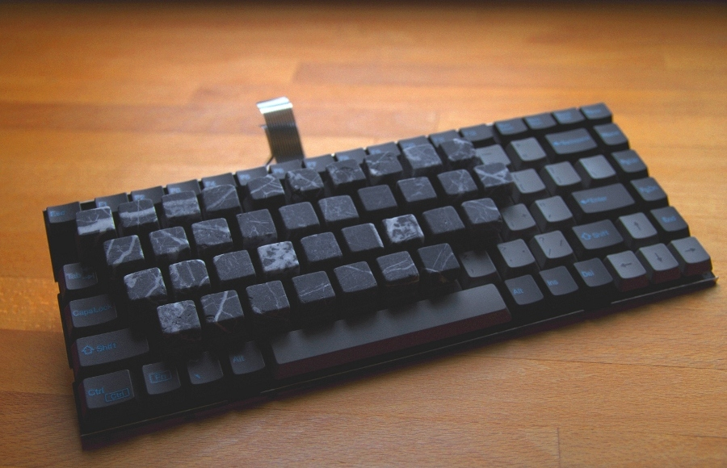
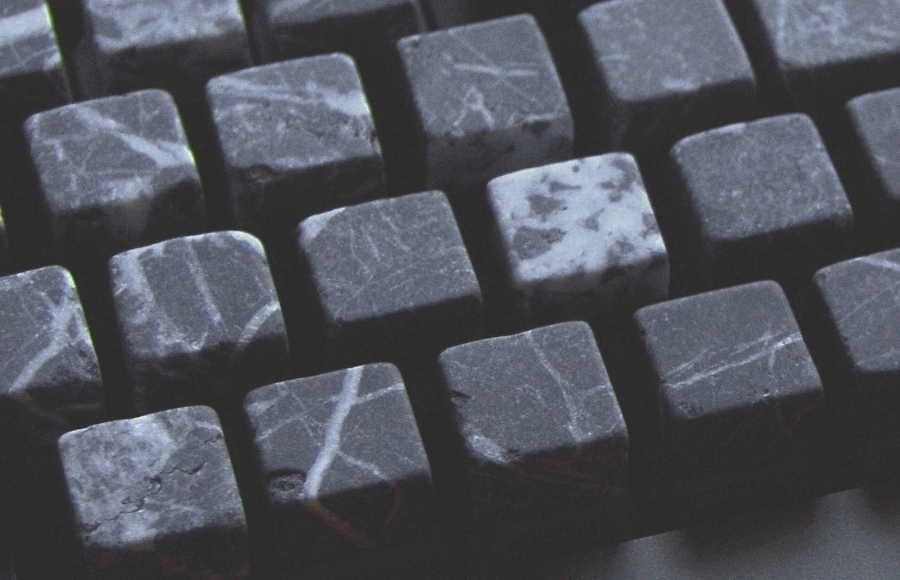
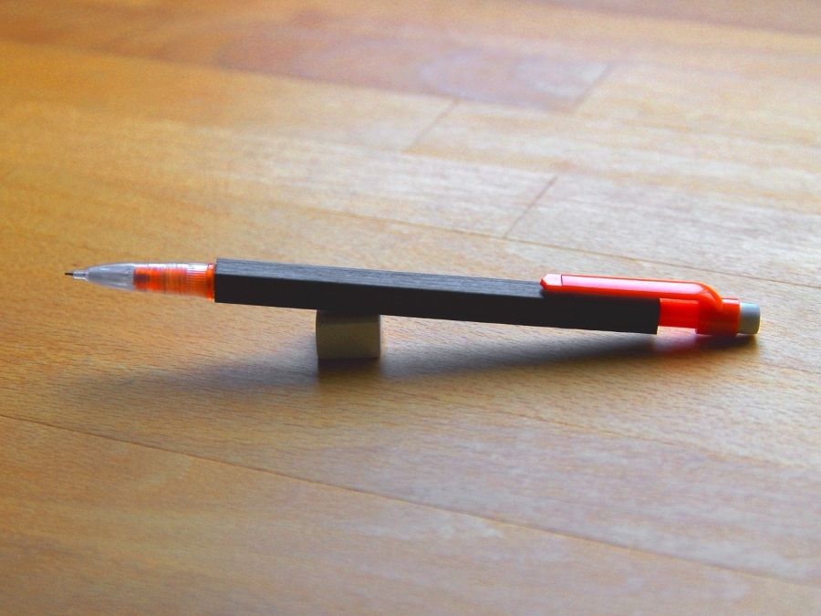
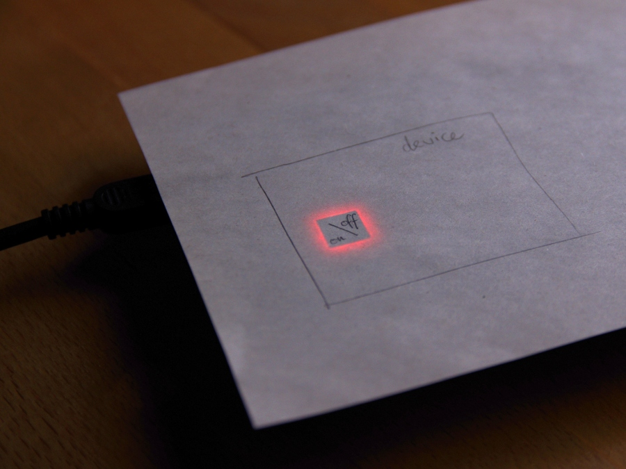
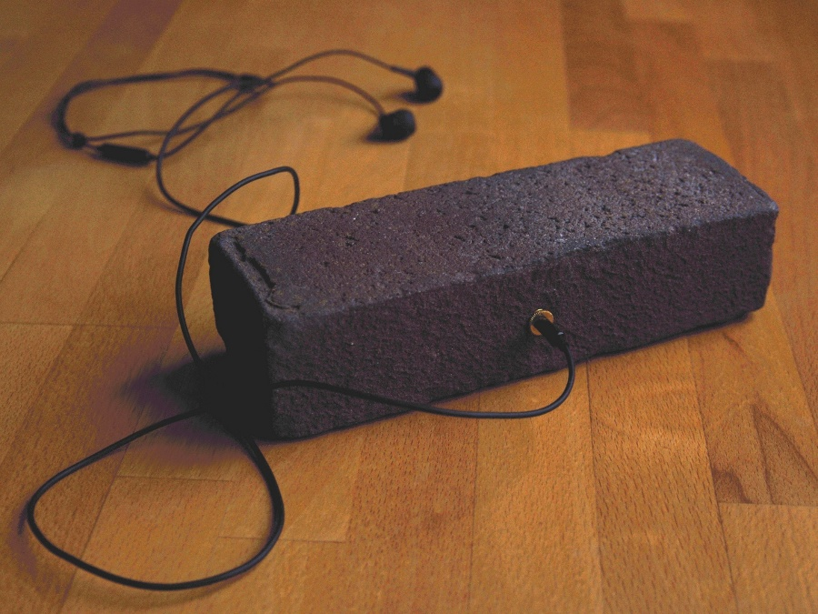

prototype for a stone keyboard:
 
In this prototype, stones being typed on feel cool, smooth, and surprisingly soft. The [F] and [J] keys stand out visually, for easier subsequent blind typing.
Using cut stones for keyboard keys could be a way to consciously combine nature, art, and technology in an object for everyday use.
Clearly, mass-produced but unique stone keyboards are possible.
prototype carbon-fiber pencil:

Making pencil casings from carbon fiber can provide a fine surface structure, reminiscent of the wood of traditional pencil casings. But the material, like the graphite core of pencils, in fact is now carbon.
Structurally, the result is light but very sturdy. Running a fingertip along the casing can result in very localized prickly sensations.
The pencil can also be used as an electrical resistor.
prototype paper touch surface with electronic backlighting:

Using a paper top surface could be a natural choice for finger- or stylus-operated electronic devices, providing a familiar feel and familiar writing friction.
Also, the combination of pencilled-on paper and electronic color light – shining through in both smooth gradients and sharp transitions – could be the starting point for a pleasing GUI look.
my personal music player:

The brick is one of the oldest and most powerful lifestyle-defining technologies, still around today all over the world.
This brick also is a functioning music player. Really: video.